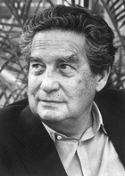
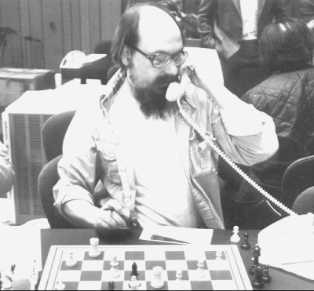
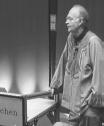

La naturaleza del software, según Octavio Paz

“La revelación de nuestra condición es, asimismo creación de nostros mismos. Según se ha visto, esa revelación puede darse de muchas formas e incluso no recibir formulación verbal alguna. Pero aun entonces implica una creación de aquello mismo que revela: el hombre. Nuestra condición original es, por esencia, algo que siempre esta haciéndose a sí mismo”
Así comienza Octavio Paz el capítulo “Inspiración”, en su libro el “Arco y La Lira”, y acudo
precisamente a el, en busca del impulso necesario para saltar el abismo, para salir de la comodidad del túnel y ver si más allá de la luz de salida que me ofrece la pantalla en blanco, puedo reencontrarme con el afán creador y así dar vida a mi primer artículo para la Naturaleza del Software. Como punto de partida nada mejor que el propio título de este blog, “La Naturaleza del Software” y ver si las revelaciones de nuestra condición, no son sino creaciones nuestras. “La programación es un arte” plantea Donald Knuth, frase agradable a nuestro ego y que nos permite soñar con ser artistas, tomar la investidura del creador y volver a repetir la historia de Prometeo, Brian Kernighan rápidamente sentencia nuestra vuelta a tierra con su cita “Controlar la complejidad es la esencia del
software”, ¿Somos eso, los controladores de la complejidad? Más aún tipos como Ken Thompson, nos recuerdan lo primitivo que puede llegar a ser el hacer del software, “En caso de duda, aplica fuerza bruta”. Estas contradicciones aparentes, son las fuerzas que lucha por algo que siempre se esta haciendo así mismo, el software como creación del hombre y en definitiva el hombre mismo por medio del uso de la técnología.

Sin embargo, para muchos la visión de la programación como arte, es la expiación de la culpa por no haber podido controlar la complejidad de la esencia del software y de los problemas que resuelven, la redención por haber aplicado fuerza bruta cuando las musas andaban de vacaciones y no había tiempo para esperar su regreso.
El ver la programación como una creación, de manera inconsciente nos lleva al enfoque “creacionista” con respecto a la naturaleza del software, en un principio el caos, luego seis días de arduo trabajo y trasnoches, y al final del proyecto, obtenemos ese orden maravilloso denominado universo junto al merecido premio del descanso al séptimo día. Si el universo no resultó tan ordenado, culpar al creador es de poco respeto, mal que mal, antes solo estaba el caos. ¿Y después del séptimo día?. Bueno hacemos “Mantención de Software”. Controlamos la complejidad, sin fuerza bruta, pero cada día más brutos. Instalamos la idea de que existe un orden permanente. El hombre de Neanderthal, de seguro pensaba igual.

A diferencia del artesano, que utiliza sus instrumentos y materiales para servirse, el artista busca trascender más allá del lenguaje que utiliza, es alguien que se pone al servicio del lenguaje o medio de expresión y busca que este recupere su naturaleza original y lo trascienda. Es en ese contexto donde la programación es un arte, porque la naturaleza del software, es la naturaleza del hombre que transforma su medio y trasciende en sus posibilidades. Este es el sentido que le doy a la cita de Donald Knuth y en ello va la naturaleza del software.